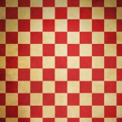

Aula 07.3 - Descritores de imagens#
MBA em Ciência de Dados#
Técnicas Avançadas de Captura e Tratamento de Dados#
Módulo VII - Dados não estruturados: sinais e imagens#
Descritores de imagens#
Material Produzido por Moacir Antonelli Ponti
CeMEAI - ICMC/USP São Carlos
Conteúdo:
Características de cor baseadas em histograma
Características de textura por padrões binários locais
Existem centenas de descritores de imagens. Os clássicos relacionam aspectos visuais que podemos decrever como humanos. Entre outros:
cor
textura
forma
gradiente
Descritores simples podem ser muito úteis para recuperação de imagens baseada em conteúdo por meio de engenharia de características
Atualmente, Deep Learning (a ser visto futuramente no curso) é considerado o estado da arte para esse tipo de análise, mas suas características possuem baixo nível de interpretação.
Veremos dois exemplos de descritores interpretáveis e que podem ser úteis para propósito geral e como base para construir soluções mais complexas.
Características de cor#
Imagens possuem sua cor codificada em:
tons de cinza / intensidades: 1 canal de cor com 8 bits por pixel
16 em alguns casos, como o de imagens médicas
coloridas: RGB, com 3 canais de cor com 8 bits cada (total 24 bits)
também podem ser codificadas em outros espaços de cores, como HSV (Hue, Saturation, Value), Lab, Luv, entre outros.
O descritor de cor (ou intensidade) mais simples é o histograma global de cores.
Vamos usar como exemplo um caso anterior que vimos na primeira aula!
import imageio.v2 as imageio
import numpy as np
import matplotlib.pyplot as plt
# carregar e exibir imagens da "base de dados"
img1 = imageio.imread("dados/cebolinha3.jpg")
img2 = imageio.imread("dados/cebolinha2.jpg")
# carregar imagem de consulta e codificar funcao de distancia
# computar as distancias e exibir
imgQ = imageio.imread("dados/cebolinha1.jpg")
def Euclidean_distance(A, B):
""" Calcula a distancia Euclidiana entre dois vetores de mesmo tamanho"""
return np.sqrt( np.sum((A-B)**2) )
dQ1 = Euclidean_distance(imgQ, img1)
dQ2 = Euclidean_distance(imgQ, img2)
plt.figure(figsize=(9,3))
plt.subplot(131); plt.imshow(imgQ); plt.title('Consulta')
plt.subplot(132); plt.imshow(img1); plt.title('Rank 1 : %.1f' % dQ1)
plt.subplot(133); plt.imshow(img2); plt.title('Rank 2 : %.1f' % dQ2)
---------------------------------------------------------------------------
ModuleNotFoundError Traceback (most recent call last)
Cell In[1], line 1
----> 1 import imageio.v2 as imageio
2 import numpy as np
3 import matplotlib.pyplot as plt
ModuleNotFoundError: No module named 'imageio'
def histograma_global(img, bins):
# um único canal de cor
if (len(img.shape) == 2):
hist,_ = np.histogram(img, bins=bins)
# mais do que um canal de cor RGB
if (len(img.shape) == 3):
hist_R,_ = np.histogram(img[:,:,0], bins=bins)
hist_G,_ = np.histogram(img[:,:,1], bins=bins)
hist_B,_ = np.histogram(img[:,:,2], bins=bins)
hist = np.concatenate([hist_R, hist_G, hist_B])
# normaliza o vetor resultante pela soma dos valores
hist = hist.astype("float")
hist /= (hist.sum() + 0.0001)
return hist
HQ = histograma_global(imgQ, 64)
H1 = histograma_global(img1, 64)
H2 = histograma_global(img2, 64)
dQ1_H = Euclidean_distance(HQ, H1)
dQ2_H = Euclidean_distance(HQ, H2)
plt.figure(figsize=(12,4))
plt.subplot(131); plt.imshow(imgQ); plt.title('Consulta')
plt.subplot(132); plt.imshow(img2); plt.title('Rank 1: %.4f' % dQ2_H)
plt.subplot(133); plt.imshow(img1); plt.title('Rank 2: %.4f' % dQ1_H)
Text(0.5, 1.0, 'Rank 2: 0.4683')
vantagens em utilizar descritores:#
vetores de característica possuem menor dimensão do que o espaço de pixels e podem ser usados como índices,
imagens de resolução diferentes podem ser comparadas,
é possível aplicar redução de dimensionalidade
print("Dimensionalidade pixels = ", np.product(imgQ.shape))
print("Dimensionalidade histograma = ", np.product(HQ.shape))
Dimensionalidade pixels = 674028
Dimensionalidade histograma = 192
img3 = imageio.imread("dados/magali.jpg")
print("Dimensionalidade pixels = ", np.product(img3.shape))
#dQ3 = Euclidean_distance(imgQ, img3)
Dimensionalidade pixels = 923520
from skimage.transform import resize
imgQ_shape = imgQ.shape # Obtem a forma da imagem 'imgQ'
img3_resized = resize(img3, imgQ_shape) # Redimensiona 'img3' para ter o mesmo formato de 'imgQ'
print("Dimensionalidade pixels = ", np.product(img3_resized.shape))
dQ3 = Euclidean_distance(imgQ, img3_resized) # Agora você pode calcular a distância Euclidiana
print(dQ3)
Dimensionalidade pixels = 674028
181973.0906349875
O erro é de incompatibilidade nos tamanhos das imagens, de forma que diferentes resoluções não permita comparação direta.
H3 = histograma_global(img3, 64)
dQ3_H = Euclidean_distance(HQ, H3)
plt.figure(figsize=(12,8))
plt.subplot(231); plt.imshow(imgQ); plt.title('Consulta')
plt.subplot(234); plt.imshow(img2); plt.title('Rank 1 : %.4f' % dQ2_H)
plt.subplot(235); plt.imshow(img3); plt.title('Rank 2 : %.4f' % dQ3_H)
plt.subplot(236); plt.imshow(img1); plt.title('Rank 2 : %.4f' % dQ1_H)
Text(0.5, 1.0, 'Rank 2 : 0.4683')
outros descritores de cor#
Border/Interior Classification (BIC): computa dois histogramas um para regiões planas (interior) e um para bordas ou regiões com variação (border)
Autocorrelograma de cores: computa uma matriz que verifica a ocorrência de uma cor em relação às outras
Características de textura#
Consideram não apenas os valores absolutos dos pixels, mas também sua relação com vizinhos.
regiões planas tem significado diferente de regiões com alta variação
diferentes padrões de variação possuem significado diferente de textura
Textura |
Exemplo |
Textura |
Exemplo |
|---|---|---|---|
Entrelaçado |
Borbulhante |
||
Espargido |
Pontilhado |
||
Trançado |
Xadrez |
 |
Ainda que características de frequência possam ser utilizadas nesse caso, a Tranformada de Fourier não permite a localização das frequências, atuando apenas de forma global.
Um descritor bastante utilizado é o Local Binary Patterns (LBP), implementado na biblioteca scikit-image
Ele busca por padrões locais em que cada pixel central é comparado com os vizinhos de forma binária:
valores maiores o iguais se transformam em 1
valores menores se transformam em 0

Considerando uma vizinhança de 8 pixels, temos \(2^8 = 256\) códigos distintos, dos quais obtemos um histograma
from skimage import feature
def lbp_features(img):
# LBP opera em imagens de um só canal, aqui vamos converter
# RGB para escala de cinza usando o método Luminance
img_gray = img[:,:,0].astype(float)*0.3 + img[:,:,1].astype(float)*0.59 + img[:,:,2].astype(float)*0.11
# aqui definimos o numero de pontos e o raio, padrao = 8, 1
lbp = feature.local_binary_pattern(img_gray.astype(np.uint8), 8, 1, method="uniform")
# lbp retorna um matriz com os códigos, então devemos extraír o histograma
(hist, _) = np.histogram(lbp.ravel(), bins=np.arange(0, 8 + 3), range=(0, 8 + 2))
# normaliza o histograma
hist = hist.astype("float")
hist /= (hist.sum() + 1e-6)
# return the histogram of Local Binary Patterns
return hist
img1 = imageio.imread("dados/texture_dotted.jpg")
img2 = imageio.imread("dados/texture_dotted3.jpg")
img3 = imageio.imread("dados/texture_dotted2.jpg")
img4 = imageio.imread("dados/texture_interlaced.jpg")
img5 = imageio.imread("dados/texture_chequered.jpg")
img6 = imageio.imread("dados/texture_sprinkled.jpg")
lbp1 = lbp_features(img1)
lbp2 = lbp_features(img2)
lbp3 = lbp_features(img3)
lbp4 = lbp_features(img4)
lbp5 = lbp_features(img5)
lbp6 = lbp_features(img6)
dQ2_H = Euclidean_distance(lbp1, lbp2)
dQ3_H = Euclidean_distance(lbp1, lbp3)
dQ4_H = Euclidean_distance(lbp1, lbp4)
dQ5_H = Euclidean_distance(lbp1, lbp5)
dQ6_H = Euclidean_distance(lbp1, lbp6)
plt.figure(figsize=(10,8))
plt.subplot(231); plt.imshow(img1); plt.title('Consulta')
plt.subplot(232); plt.imshow(img2); plt.title('Rank 1 : %.4f' % dQ2_H)
plt.subplot(233); plt.imshow(img3); plt.title('Rank 2 : %.4f' % dQ3_H)
plt.subplot(234); plt.imshow(img4); plt.title('Rank 3 : %.4f' % dQ4_H)
plt.subplot(235); plt.imshow(img5); plt.title('Rank 4 : %.4f' % dQ5_H)
plt.subplot(236); plt.imshow(img6); plt.title('Rank 5 : %.4f' % dQ6_H)
Text(0.5, 1.0, 'Rank 5 : 0.2586')
vals = range(len(lbp1))
plt.figure(figsize=(10,5))
plt.subplot(231); plt.bar(vals,lbp1);
plt.title('Consulta'); plt.axis('off')
plt.subplot(232); plt.bar(vals,lbp2);
plt.title('Rank 1'); plt.axis('off')
plt.subplot(233); plt.bar(vals,lbp3);
plt.title('Rank 2'); plt.axis('off')
plt.subplot(234); plt.bar(vals,lbp4);
plt.title('Rank 3'); plt.axis('off')
plt.subplot(235); plt.bar(vals,lbp5);
plt.title('Rank 4'); plt.axis('off')
plt.subplot(236); plt.bar(vals,lbp6);
plt.title('Rank 5'); plt.axis('off')
(-0.8900000000000001, 9.89, 0.0, 0.3422533333181221)
Outros descritores de imagens#
HoG - histogram of oriented gradients
usados em reconhecimento de pessoas e objetos
Haar-like features
usados em detecção facial
SIFT - scale-invariant feature transform
foi por um bom tempo estado-da-arte, posteriormente patenteado mas há similares como o DAISY
BRIEF - descritor binário local
também similar ao SIFT, mas binário e utilizado para matching de regiões em imagens
Gray-level Co-ocurrence Matrices (GLCM) - também conhecidos por descritores de Haralick
utilizado para textura
Resumo:#
Imagens são dados não estruturados espaciais
amostras tomadas em uma grade regular
a representação pode ser em intensidades (um canal) ou cores (geralmente RGB, 3 canais)
Descritores
pixels da imagem
histogramas de cores ou intensidades
textura, com relação entre pixels numa vizinhança